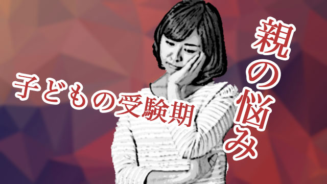

今年も残すところわずか。
世間は年末の慌ただしさの中にいますが、この時期になると思い出すのは、塾講師時代の受験生指導です。
といっても実は受験生の指導自体は大変というほどではなく、むしろ受験生の親への対応に苦労した印象があります。
子どもが初めて受験するという家庭はもちろんのこと、そうでない家庭でも子どもの受験期には、独特の緊張感に包まれます。
そして子どもよりも親のほうが心配や不安にとらわれやすいと感じています。
中には心配のあまり情緒不安定になる親—たいていは母親—も出てきます。
今だから話せますが、こういう「不安定な親」にはずいぶん手を焼き（失礼！）ましたね。
当たり前ですがこの時期私たちは子どもたちの受験指導に集中したい。何といっても受験直前は私たち講師にとっても一番忙しい、勝負の時だからです。
ところが「不安定母」はお構いなしにジャンジャン電話そしてアポなし訪問を仕掛けてくるのです。
「センセー、どうしましょう！」と息急き切って相談にくる親にスゲなく対応するわけにもいかず、かといって授業中だろうが深夜だろうが電話してくる親もいたりして私も苦慮した思いがあります。
もちろん受験生の親が皆情緒不安定になるわけではありません。
すでに上の子で経験済みだったり、受験はあくまで子どもの問題と割り切って動じない親もいます。
それでも大半の親は不安、心配を抱えて我が子の受験を見つめていることでしょう。
もちろん「合格して欲しい」と願ってはいるものの、結果云々よりも「早く終わって欲しい」というのが正直な心情ではないでしょうか。
我が家にも高校受験生の息子がいるので気持ちは一緒です。
この時期の親のあり方については、かつての記事にも詳しく書いたので（＝親も大変〜子どもの受験〜）今回は別の角度から話してみたいと思います。
それは、子どもの受験が実は親にとっても「自分と向き合う」チャンスではないかという話です。
子どもの受験は親の「問題」を浮き彫りにする
私が30年以上受験生のお世話をしてきて思うのは、子どもの受験では親の本音があらわになるということです。
本音というのは、日頃の建前に隠されていた親その人の本当の思い（正体）です。
その「本音」は親自身が思ってもいなかった自分の姿であったりするので当惑することもあります。
たとえば常日頃「子ども次第なので親がうるさく口をはさまないようにしています」とか「ウチは子どもの主体性を尊重して全て子どもに任せます」と物分かりよく言っている親が、受験直前になると「そんな低い志望校では困る」とか、成績が伸びないから何とかして欲しいなどと突如豹変する場合です。
そしてそういう親は普段の言動と異なり急に子どもの学習態度にも介入したりします。
この突然の豹変ぶりには私も何度も驚かされたものです。
「じゃ、日頃の主張は何だったのか！」
要するに親も「理想の親像」を演じていたのでしょう。「親とはこうあるべき
」という理想のイメージを抱き、そのようにふるまってきたつもりが「受験」という緊急事態を前にメッキが剥がれおち、その下の「本音」がむき出しになったのです。
本音があらわになるという意味で、もう一つ子どもの受験を機に夫婦の不仲が浮かび上がることもあります。
縁起でもないこと言うなと叱られるかもしれませんが結構あるのです。
母親の中には、子どもが受験生で自分が大変な思いをしているのに父親は無関心で協力的でないと不満を抱えている人がいます。
あるいは日頃のコミュニケーション不足が子どもの受験をきっかけに「バトル」という形で一気に吹き出すこともあります。
「何でこの時期に親の離婚話が持ち上がる！？」
かつて私は何度かそういう思いに駆られましたが、今は「この時期」だからこそそんな話が持ち上がるのだと理解しています。
先の「理想」を演じる親にしろ「不仲」になる夫婦にしろ、それまで隠されていた本音（本当の思い）が子どもの受験という、一種張り詰めた家庭の空気と危機感の中で図らずも表面に浮上したというのが真相なのです。
子どもの受験は親にもチャンス
ところで私は、この親の「本音」が浮上する問題は決して悪いことではないと思っています。
「子どもが受験するときに親の離婚話など、子どもが可哀想ではないか」
「大切な時期に親の言動がコロコロ変わると子どもが混乱するのでは」
かつては私もそう思いましたし、子どもにとって迷惑な話なのは確かですが、後にも話すように子どもは意外にタフなものです。
それより先の情緒不安定な親も含めて、今までフタをしてきた自分の本音や、向き合うことを避けてきた家庭内の問題に気付くこと。その意義は決して小さくはないと思います。
なぜなら子どもの受験という大きな出来事がなければ、これらの問題は明るみに出ることなくずっと潜在したまま闇に埋もれ、その矛盾はさらに大きさを増したに違いないからです。
「問題」は気づいて向き合うことでしか解決しないからです。
子どもの受験はだから親にとっても「自分と向き合う」チャンスだということです。
子どもの受験で浮上する親の問題は他にも様々なものがあります、
私の経験でも以下のような人がいました。
受験に失敗した経験を子どもに投影し、我が子にだけは失敗させたくないと過剰に心配する。その中には、自分の親が厳しい家計をやりくりしていくつもの塾に通わせてくれたのに失敗し、そのことに強い罪悪感をもっている人もいました。
いずれにせよ、受験にまつわるトラウマ的記憶を我が子に投影し過度な不安や心配を抱えている例です。（先の情緒不安定な親もこのタイプに多い）
しかし、子どもを心配することは子どもにとって何の助けにもならないのです。
それどころか心配は子どもに「おまえを信用できない」というメッセージを送ることになりかねません。
だから親は心配する前に、自分の中にこのような個人的トラウマを抱えていないか探ってみてください。そして、もしそのことに気づけば「過剰な心配」も止まるでしょう。
それに子どもは親が思っているよりたくましい。
特に高校受験を迎える子どもたちは、12月〜1月にもっともエンジンがかかり、不安より「受かりたい」気持ちが強まっています。
なので親は子どもを信じて愛情を込めて栄養のあるものなどを作ってあげればよいのです。
最後に
親の皆さんにお願いしたいこと。
それは受験期の子どもを心配することではなく、自分の内面こそを見つめ直して欲しいということ。
自分の中にある、受験にまつわる記憶や感情、子どもとの関係におけるふるまい。そして夫婦間や家庭内で未解決の問題。
それらに気づき向き合うこと。手放すこと。あるいは解決すること。
なぜ自分が子どもの受験についてこれほど心がゆさぶられるのか。
まずそこから入っていくとよいでしょう。
こう考えると子どもの受験は親にとっても自分を成長させるチャンス、心の奥底に押し込めていた「本当の自分」と向き合い解決するチャンスだということが分かります。
自分の本音に気づき、本当の自分がわかればやたらと不安に引きずり回されることもなくなるでしょう。
夫婦間の問題も解決へ向かうかもしれません。
そうして初めて親としての仮面を被るのではなく、かつて受験を経験した「人生の先輩」として冷静に子どもの受験を受け入れ、共に乗り越えていけるでしょう。